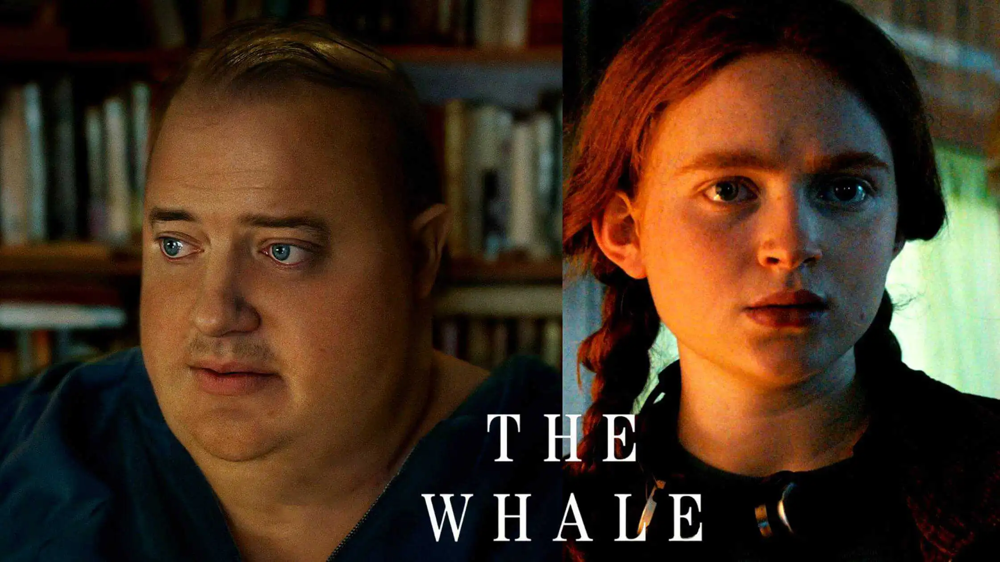

"A reclusive, morbidly obese English teacher attempts to reconnect with his estranged teenage daughter."
The Whale is a 2022 American psychological drama film directed by Darren Aronofsky and written by Samuel D. Hunter, based on his 2012 play of the same name.The film stars Brendan Fraser, Sadie Sink, Hong Chau, Ty Simpkins, and Samantha Morton. The plot follows a reclusive, morbidly obese English teacher who tries to restore his relationship with his teenage daughter.
The Whale premiered at the 79th Venice International Film Festival on September 4, 2022. It had a limited theatrical release in the US on December 9, before a wide release on December 21 by A24. The film polarized critics, though the cast's performances, particularly those of Fraser and Chau, received praise. It has grossed $53 million against a budget of $3 million. For his performance, Fraser won Best Actor at the Academy Awards, Critics' Choice Awards, and Screen Actors Guild Awards, and was nominated at the Golden Globe Awards and British Academy Film Awards. The film also won the Academy Award for Best Makeup and Hairstyling, and received a Best Supporting Actress nomination for Chau, as well as a nomination for the Producers Guild of America Award for Best Theatrical Motion Picture.